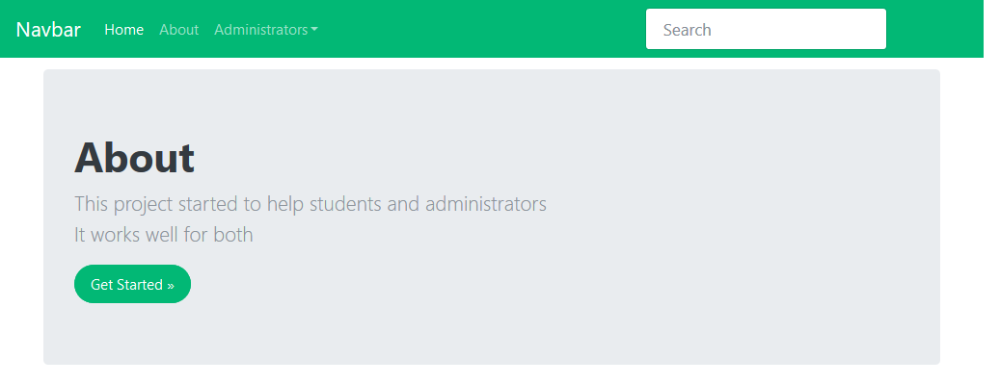

Oregon Engineering College Transfer App - Part 4: About Page and Bootstrap
This is the fourth part of a multi-part series on building a web app with Python and Django. The web app will act as a resource for Engineering students at Oregon Community Colleges that want to transfer to 4-year Universities. The transfer web app will show which classes from their community college engineering program will transfer to which classes in a 4-year University engineering program. In this four post, I'll review building the about page and using bootstrap to stype the pages. This includes creating a view, and creating a urlpattern. Then we'll create a template and use django's template engine and boostrap to build the page. Finally we'll run the server locally and see if the about works and is styled correctly.
What is Bootstrap?
What is Bootstrap and why add it to the django project? Bootstrap is a collection of html, javascript and css that produces mobile-responsive web wages. Using bootstrap will make the Oregon Transfer App site work on phones, tablets and computers. The look of the site will also be improved using bootstrap. We'll add bootstrap functionality to django templates to produce a navigation menu and styled home and about pages.
Create an about page URL in the pages app
We need to make sure that both the overall project urls and the page app urls are set up for our new pages (the home page and about page).
First check that the overall project url's are pointing to the pages url's:
project urls
# transfer_project/urls.py
from django.contrib import admin
from django.urls import path, include
urlpatterns = [
path('admin/', admin.site.urls),
path('', include('pages.urls')),
]
page app urls
Now modify the page app urls. This means modifying the file pages/urls.py. Note the imports at the top of the file. And note how the AboutPageView.as_view() and HomePageView.as_view() methods are included in the paths.
# pages/urls.py
from django.urls import path
from .views import HomePageView, AboutPageView
urlpatterns = [
path('about/', AboutPageView.as_view(), name='about'),
path('', HomePageView.as_view(), name='home'),
]
Create the view for the home and about pages
Now within the pages app, we need to modify the pages/views.py file. We'll build a class-based view for the home page and build a class-based view for the about page. Note the imports at the top of the file. The class names for the views have to match the class names for the views which we included in the pages/urls.py file.
# pages/views.py
from django.views.generic import TemplateView
class HomePageView(TemplateView):
template_name = 'home.html'
class AboutPageView(TemplateView):
template_name = 'about.html'
Create the templates for the home and about pages
Now we'll build three templates enventuall will render the home page and the about page. One template will be a base template and then the home and about templates will build upon this base template. Before we use the templates, a templates directory has to be created in the base project directory. All three templates will be saved in this templates/ directory.
Add template path to project settings.py
After the templates directory is created (in the project root directory), the transfer_project/setting.py file needs to be modified to include the new templates directory. In the TEMPLATES block of the transfer_project/setting.py file, add [os.path.join(BASE_DIR, 'templates')] to 'DIRS':
# transfer_project/settings.py
TEMPLATES = [
{
'BACKEND': 'django.template.backends.django.DjangoTemplates',
'DIRS': [os.path.join(BASE_DIR, 'templates')],
'APP_DIRS': True,
'OPTIONS': {
'context_processors': [
'django.template.context_processors.debug',
'django.template.context_processors.request',
'django.contrib.auth.context_processors.auth',
'django.contrib.messages.context_processors.messages',
],
},
},
]
Base template
Now we'll build the base template. This template acts as the parent template for the home and about templates. Create a base.html file in the templates directory.
<!-- templates/base.html -->
{% block doctype %}
<!DOCTYPE html>
<html lang="en">
{% endblock %}
{% block head %}
<head>
<meta charset="UTF-8">
{% block title %}
<title>Oregon Transfer App</title>
{% endblock %}
</head>
{% endblock %}
{% block header %}
<header>
<a href="{% url 'home' %}">Home</a> | <a href="{% url 'about' %}">About</a>
</header>
{% endblock %}
{% block content %}
{% endblock %}
Home template
The home template is next. Create a home.html template in the templates directory. The home template extends the base template.
<!-- templates/home.html -->
{% extends 'base.html' %}
{% block title %}
<title>Home</title>
{% endblock %}
{% block content %}
<h1>Home page</h1>
{% endblock content %}
About template
The about template is next. Create an about.html template in the templates directory. The about template also extends the base template.
<!-- templates/about.html -->
{% extends 'base.html' %}
{% block title %}
<title>About</title>
{% endblock %}
{% block content %}
<h1>About page</h1>
{% endblock %}
Run the local server
Let's test the site. Run the local server and see our changes. I ran the server from the Anaconda Prompt.
$ conda activate transfer
(transfer)$ python manage.py runserver
The resulting home and about pages should look something like this:


Add Bootstrap to templates
Now we'll add bootstrap styling to the templates. I'm going to use the bootstrap CDN for simplicity instead of downloading and using the css and javascript files that make up bootstrap. As long there is an internet connection, the CDN link will work.
Create a new bootstrap_base.html template
In the templates directory add another .html file called bootstrap_base.html. Include the following in the template. Note in the block stylesheets section there is a link to the bootstrap css. Near the bottom of the page, there are links to the bootstrap javascript. According to the bootstrap docs, the order of javascript links should go: jquery, popper.js, bootstrap.js. The links for the bootstrap CDN may change, the links I used are here.
<!-- templates/bootstrap_base.html -->
{% load staticfiles %}
{% block doctype %}
<!DOCTYPE html>
<lang="en">
{% endblock %}
{% block head %}
<head>
{% block meta %}
<meta charset="utf-8">
<meta name="viewport" content="width=device-width, initial-scale=1, shrink-to-fit=no">
<meta name="description" content="">
<meta name="author" content="">
{% endblock %}
{% block favicon %}{% endblock %}
<title>{% block title %}Title{% endblock %}</title>
{% block stylesheets %}
<!-- bootstrap 4 CDN -->
<link rel="stylesheet" href="https://stackpath.bootstrapcdn.com/bootstrap/4.1.3/css/bootstrap.min.css" integrity="sha384-MCw98/SFnGE8fJT3GXwEOngsV7Zt27NXFoaoApmYm81iuXoPkFOJwJ8ERdknLPMO" crossorigin="anonymous">
<!-- Custom styles for this template -->
<link rel="stylesheet" href="{% static 'css/navbar-top-fixed.css' %}">
<!-- bootswatch theme -->
<link rel="stylesheet" href="{% static 'css/bootswatch_litera_bootstrap.css' %}">
{% endblock %}
</head>
{% endblock %}
{% block body %}
<body>
{% block nav %}
{% include "nav.html" %}
{% endblock %}
{% block breadcrumb %}{% endblock %}
<main role="main" class="container">
{% block content %}
{% endblock %}
</main><!-- /.container -->
{% block javascripts %}
<!-- jquery, popper.js and bootstrap.js -->
<script src="https://code.jquery.com/jquery-3.3.1.slim.min.js" integrity="sha384-q8i/X+965DzO0rT7abK41JStQIAqVgRVzpbzo5smXKp4YfRvH+8abtTE1Pi6jizo" crossorigin="anonymous"></script>
<script src="https://cdnjs.cloudflare.com/ajax/libs/popper.js/1.14.3/umd/popper.min.js" integrity="sha384-ZMP7rVo3mIykV+2+9J3UJ46jBk0WLaUAdn689aCwoqbBJiSnjAK/l8WvCWPIPm49" crossorigin="anonymous"></script>
<script src="https://stackpath.bootstrapcdn.com/bootstrap/4.1.3/js/bootstrap.min.js" integrity="sha384-ChfqqxuZUCnJSK3+MXmPNIyE6ZbWh2IMqE241rYiqJxyMiZ6OW/JmZQ5stwEULTy" crossorigin="anonymous"></script></body>
{% endblock %}
</body>
{% endblock %}
</html>
Add the bootswatch litera bootstrap theme css to the pages app/static/css folder
I want the bootswatch litera theme to style the site. I downloaded the litera theme css and added the css file to /pages/static/css as bootswatch_litera_bootstrap.css. That's the name of the css file we used in the bootstrap_home.html template. Note how the bootstrap_base.html template has the tag {% load staticfiles %}. This tag loads static files (css, javascript, images).
https://bootswatch.com/4/litera/bootstrap.css
I also added an additional small css file called navbar-top-fixed.css to the pages/static/css folder. Without this little piece of css, the main div block of the site was cut off by the nav bar.
/* pages/static/css/navbar-top-fixed.css */
/* Show it is fixed to the top */
body {
min-height: 75rem;
padding-top: 4.5rem;
}
Build a nav.html template
The bootstrap_base.html template has a section for a nav bar. The nav bar html is included in the bootstrap_base.html template in an {% include %} block:
<!-- templates/bootstrap_base.html -->
{% block nav %}
{% include "nav.html" %}
{% endblock %}
So we need to make a new nav.html template in the templates directory.
<!-- templates/nav.html -->
<nav class="navbar navbar-expand-md navbar-dark bg-dark fixed-top">
<a class="navbar-brand" href="#">Navbar</a>
<button class="navbar-toggler" type="button" data-toggle="collapse" data-target="#navbarsExampleDefault" aria-controls="navbarsExampleDefault" aria-expanded="false" aria-label="Toggle navigation">
<span class="navbar-toggler-icon"></span>
</button>
<div class="collapse navbar-collapse" id="navbarsExampleDefault">
<ul class="navbar-nav mr-auto">
<li class="nav-item active">
<a class="nav-link" href="{% url 'home' %}">Home <span class="sr-only">(current)</span></a>
</li>
<li class="nav-item">
<a class="nav-link" href="{% url 'about' %}">About</a>
</li>
<li class="nav-item dropdown">
<a class="nav-link dropdown-toggle" href="https://example.com" id="dropdown01" data-toggle="dropdown" aria-haspopup="true" aria-expanded="false">Administrators</a>
<div class="dropdown-menu" aria-labelledby="dropdown01">
<a class="dropdown-item" href="#">Login</a>
<a class="dropdown-item" href="#">View Transfer Equivalencies</a>
<a class="dropdown-item" href="#">Modify Transfer Equivalencies</a>
</div>
</li>
</ul>
<form class="form-inline my-2 my-lg-0">
<input class="form-control mr-sm-2" type="text" placeholder="Search" aria-label="Search">
<button class="btn btn-outline-success my-2 my-sm-0" type="submit">Search</button>
</form>
</div>
</nav>
Modify the home.html template to use bootstrap
Next modify the home page template to use bootstrap styling. Note the bootstrap_base.html template is now used as the parent template.
<!-- templates/home.html -->
{% extends 'bootstrap_base.html' %}
{% block content %}
<div class="jumbotron">
<h1>Oregon Engineering Transfer App</h1>
<p class="lead">A project to provide college students a way to know which college classes transfer
<br> For students and administrators</p>
<a class="btn btn-lg btn-success" href="../../components/navbar/" role="button">Get Started »</a>
</div>
{% endblock content %}
Modify the about.html template to use bootstrap
Now modify the about page template to use bootstrap styling. Note again how the bootstrap_base.html template is used as the parent template.
<!-- templates/about.html -->
{% extends 'bootstrap_base.html' %}
{% block content %}
<div class="jumbotron">
<h1>About</h1>
<p class="lead">This project started to help students and administrators
<br>It works well for both</p>
<a class="btn btn-lg btn-success" href="../../components/navbar/" role="button">Get Started »</a>
</div>
{% endblock content %}
All the new template and css files ends up with the following directory structure:

Run the server locally. See if the bootstrap styling works.
OK, let's run the server locally and see if all the bootstrap styling changes made a difference. I ran the local server from the Anaconda Prompt.
$ conda activate transfer
(transfer)$ python manage.py runserver


Awesome! The home and about pages look great!
Write and run tests for two pages
It's good practice to write tests for our django project. Django has a built-in test framework that allows us to test the home page and test the about page. In the pages app, we'll modify the tests.py file to include these tests. Once the tests are written, the tests can be run from the Anaconda Prompt.
Write tests
Write the tests in the pages/tests.py file:
# pages/tests.py
from django.test import SimpleTestCase
class PagesTests(SimpleTestCase):
def test_home_page_status_code(self):
response = self.client.get('/')
self.assertEqual(response.status_code, 200)
def test_about_page_status_code(self):
response = self.client.get('/about/')
self.assertEqual(response.status_code, 200)
Run tests
Run the tests with the manage.py test command. If the local server is still running key in [Ctrl-c] to stop the server.
(transfer)$ python manage.py test
The output I got after running the tests looked something like:
Creating test database for alias 'default'...
System check identified no issues (0 silenced).
..
----------------------------------------------------------------------
Ran 2 tests in 0.018s
OK
Destroying test database for alias 'default'...
Great! Both tests passed.
Summary
We got a lot of work done on the transfer app built with django and Python. First we created a new pages URL route and created two new pages class-based views. Then we built some basic templates in django's built-in templating language. Next, we built a new base template which included the bootstrap CDN. We modified the home and about templates to use some bootstrap elements. We also built a nav template that created a nav bar for the site. Finally we wrote two tests, one test for the home page and one test for the about page. Both tests passed.
Future Work
Next, we need to build a user app into our django project. The user app will create functionality to allow users to register and login to the site. Eventually these logged-in users will have access to modify the transfer equivalencies.